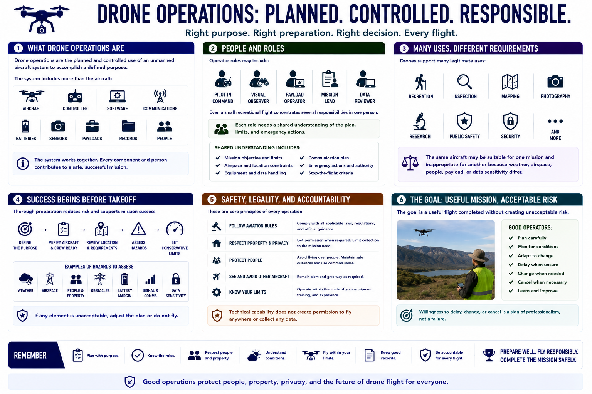

What Are Drone Operations?
Connecting to LMS... Progress: in progress

Narration
Drone operations are the planned and controlled use of an unmanned aircraft system to accomplish a defined purpose. The system includes more than the aircraft: it also includes the controller, software, communications, batteries, sensors, payloads, records, and people responsible for the flight.
Operator roles may include a pilot in command, visual observer, payload operator, mission lead, or data reviewer. Even a small recreational flight concentrates several responsibilities in one person. Each role needs a shared understanding of the plan, limits, and emergency actions.
Drones support recreation, inspection, mapping, photography, research, public safety, security, and many other legitimate uses. The same aircraft may be suitable for one mission and inappropriate for another because weather, airspace, people, payload, or data sensitivity differ.
Successful operation begins before takeoff. The operator defines the purpose, verifies the aircraft and crew are ready, reviews the location and current official requirements, assesses hazards, and selects conservative limits for the mission.
Safety, legality, and accountability are core principles. Technical capability does not create permission to fly anywhere or collect any data. Operators must respect aviation rules, property, privacy, people, other aircraft, and the limits of their equipment and training.
The goal is a useful flight completed without creating unacceptable risk. Good operators are willing to delay, change, or cancel a mission when conditions, authorization, equipment, or crew readiness do not support safe operation.